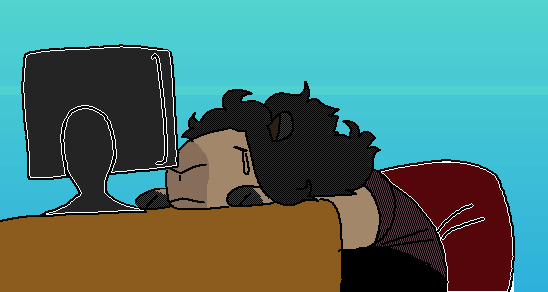

Cappy Comics

This article is outdated.
As of late, Capy has moved to a new webhome, where she has also moved her comics to. This should be added.
2019-03-05
Also see MS Life, a comic Cappy helped work on.
Cappy Comics is the given name to a number of WebComics written, drawn, and published by Welsh Neocities user Cappy. Despite Cappy being represented by her fursona (a guinea pig), the comics deal with slice of life events, along with real world events such as with comic #10 that is about a minor earthquake that affected parts of Wales and England at the time.

The current location of the comics can be fund by following this URL: https://gwtagacw.neocities.org/capy/, however this has not always been the URL for the WebComics, as an early archive from January 2018 can be found that has this URL: https://gwtagacw.neocities.org/mainsite/pages/comics.html
References
I. Photo is from the URL below, colour added by OwlMan, 28/06/18 https://gwtagacw.neocities.org/capy/03.html
This page was last updated: 28/06/2018 @ 01:24
In total this page has had 0 updates since it was uploaded.